Quote-to-Cash Demo Guide
A step-by-step script for delivering a compelling end-to-end demo. Follow this flow to take prospects from the dashboard all the way through to billing — without breaking stride.
Demo at a Glance
| Step | Area | Key Message |
|---|---|---|
| 1 | Dashboard | Real-time visibility into the entire operation |
| 2 | Customer List | Fast, searchable customer management |
| 3 | Customer View | Tags, contacts, AI-powered 90-day journal summary |
| 4 | Opportunities & Funnel | Pipeline visibility with the funnel view; work your deals from one screen |
| 5 | Opportunity Detail & Quote | Navigate into an opportunity with a pre-built quote attached |
| 6 | Quote Walkthrough | Recurring vs. one-time items, proposals — everything pre-built for demo speed |
| 7 | Service Tab — Quote → Ticket | Accepted quote flows into a service ticket automatically |
| 8 | Ticket View & Activity | Full ticket detail, work requested, SLA timers, activity feed |
| 9 | Rev.iize & AI Notes | AI transforms rough notes into professional documentation instantly |
| 10 | Parts, Labor & Inventory | Quote items on the ticket, inventory reservation, purchase orders |
| 11 | Dispatch Board | Drag-and-drop scheduling, calendar sync |
| 12 | Tech Workflow & Time Logging | Timer automation, Rev.ii voice tickets, ready-for-billing flow |
| 13 | Billing & Review | Billing queue, invoice creation — describe, don't click |
| 14 | Customer Portal | Self-service invoices, payments, ticket submission |
| A | Analytics & Reporting | 10+ dashboards, SQL Lab, AI-powered "Chat With Your Data" |
| B | Workflow Automation | 19 configurable workflows, SLA triggers, multi-channel reactions |
| C | Integrations | HubSpot, NinjaOne, N-able, Acronis, Hudu, Teams, Slack, COPS |
| D | Project Management | Gantt view, milestones, phases, job costing, activity tracking |
Everything is pre-built for the demo. You are not creating quotes, signing proposals, or converting tickets live — you're showing the result of each step and narrating what happened. This keeps the demo tight and focused on value, not clicks.
Dashboard Overview
Open with the command center. Show the prospect that Rev.io gives managers and techs a real-time pulse on the business before they touch a single ticket.
Demonstrate real-time business visibility — SLA performance, open tickets, revenue trends, and team productivity all in one view.
What to Highlight
- SLA Performance gauge — 83% tickets closed, showing contract compliance at a glance
- Tickets breaching SLA in next 24 hours — proactive alerts before things go wrong
- Ticket by Type week-over-week — spot trends in workload
- Profit by Technician — see who's driving margin
- Year-to-Date Revenue Analysis — MRC vs. NRC breakdown
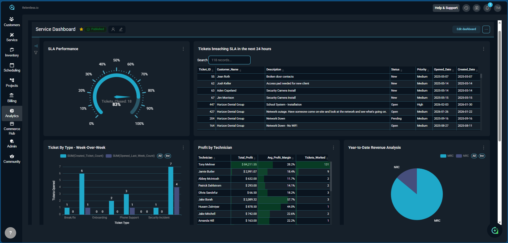
If the Dashboard doesn't load, start with the Calendar View and circle back. Never stall on a loading screen.
List all open tickets for the day.
💡 Perfect for morning standups — instant workload visibility without touching a dashboard.
Identify Service Call tickets that have been open for more than two days.
💡 Catch SLA risks before they escalate. Adjust the timeframe to match your SLA thresholds.
How many hours did each technician log this week?
What is the total value of unposted charges waiting to be invoiced?
💡 Great for billing managers — surfaces revenue that's sitting uncollected.
Catch SLA breaches before customers call — not after. Managers see contract compliance rates, ticket queue health, and YTD revenue without pulling a single report.
MSPs live and die by SLAs. The dashboard shows at a glance which tickets are at risk of breaching, letting managers proactively reassign before the clock runs out.
The Profit by Technician view shows which installs are actually profitable — helping you price future jobs more accurately and identify techs who need coaching.
Customer List
Show how fast and clean the customer database is. One search bar, all your accounts.
Demonstrate how easy it is to find and manage customers from a single searchable list.
What to Show
- Navigate to the Customer List
- Use the search bar — show how fast it filters (223 accounts, finds in seconds)
- Point out Tags — VIP, Stage 2 - Quoting, Managed Services — versatile labels visible right on the list
- Note the account types, statuses, and primary contacts all visible without clicking in
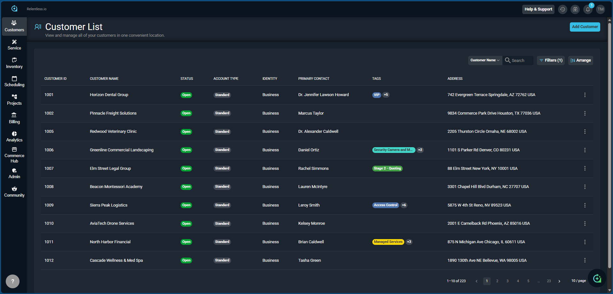
Tag customers by service tier, contract type, or renewal date — making it easy to prioritize high-value accounts and act before renewals lapse.
Segment clients by service level (Gold/Silver/Bronze) or flag accounts due for QBRs — all visible on the list without opening a single record.
Tag accounts by system type (CCTV, Access Control, Alarm) to quickly target upsell campaigns for camera upgrades or monitoring contract renewals.
Customer View & Rev.ii
Dive into a customer account and show the depth of information available — plus the AI-powered prep that makes every client interaction faster.
Showcase customer details, smart tags, and Rev.ii's 90-day journal summary capability.
What to Show
- Tags — VIP, Security, TOM, scheduling notes ("Only available 9AM–5PM CST") — these are hot notes the whole team sees instantly
- Contacts section — who to call, their email and phone right on the header
- Recent Invoice + Default Recurring Contract in the right-hand panel — billing status at a glance
- Ask Rev.ii → Ninety Day Ticket Activity Summary — show the AI-generated summary of the last 90 days of activity so a rep can prep for a call in seconds
- Journal tab — the full history of every interaction
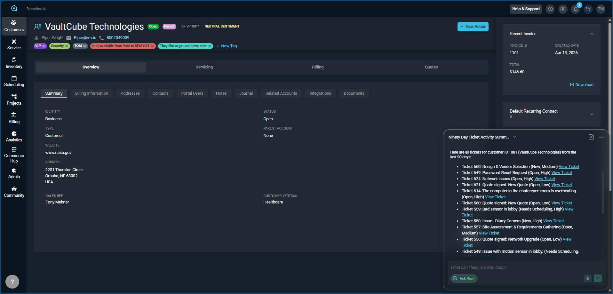
The Rev.ii panel is already open and showing the 90-day summary. Walk through it — "Before any client call, a rep can pull up this summary and be fully briefed in 10 seconds. No digging through notes."
Get me the details of [Customer Name], include balance of the customer, and unposted transactions.
💡 Replace [Customer Name] with the actual account. Instantly surfaces everything you need before a call.
What are the latest tickets created for this customer?
How many open tickets does this client have?
Before a renewal call, pull the 90-day AI summary and immediately see every issue the customer experienced — turning a cold call into an informed conversation.
vCIOs use the 90-day summary to prep for QBRs in seconds instead of digging through ticket history. Walk in knowing exactly what went wrong, what was fixed, what's still open.
A sales rep can pull up a customer profile before an annual system review and instantly see aging equipment, service call history, and whether the customer is a candidate for an upgrade proposal.
Opportunities & Funnel View
Show how the sales team manages their pipeline — with the funnel visualization showing exactly where deals stand and how much revenue is at each stage.
Demonstrate pipeline visibility with the funnel view. Show how reps can work all their opportunities from one screen — no Salesforce required.
What to Show
- Funnel visualization — Qualification ($50.9k, 10 deals) down to Verbal Agreement ($10.3k, 3 deals)
- Pipeline metrics — 30 opportunities, $215k total pipeline value, $7.1k avg deal size
- Opportunity list — sortable by stage, owner, close date, forecast category
- Show how a rep can see all their deals in one view and prioritize without switching tools
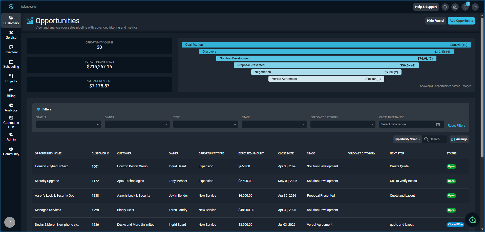
Salespeople want to see their pipeline clearly and work their deals fast. The funnel view gives them that at a glance — then they can drill into any opportunity from the same screen.
Sales teams managing complex multi-site deals see exactly how many opportunities are in final negotiation versus early qualification — and forecast revenue with confidence.
For MSPs with multiple reps hunting new logos, the funnel gives the sales manager instant pipeline visibility without chasing spreadsheets or separate CRM logins.
Security integrators with long sales cycles can track every deal stage and total pipeline value at a glance — ensuring no opportunity falls through the cracks during months-long pursuits.
Opportunity Detail & Attached Quote
Open the opportunity and show how a quote is linked directly to the deal — everything in one place.
Show the opportunity detail view and how an existing quote is attached. Navigate into the quote from here.
What to Show
- The stage pipeline bar at the top — Qualification → Discovery → Solution Development → Proposal Presented → Negotiation → Verbal Agreement
- Opportunity details: customer, owner, expected amount ($2,500), close date, source, next step
- The Quotes tab — Quote #142, Security Upgrade, Open, created Apr 10
- Click into Quote #142 to open it
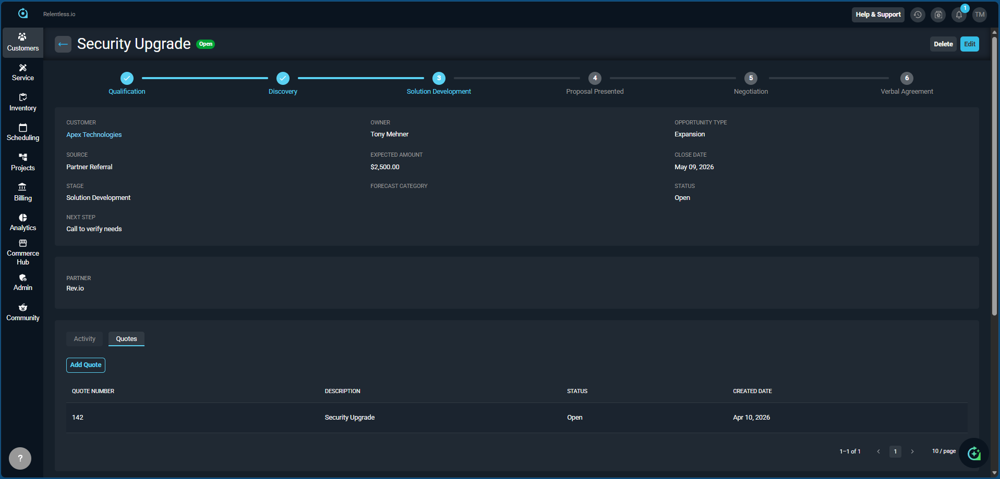
Make sure you select "Security Upgrade" (Customer: Apex Technologies) from the list — this is the opportunity that already has Quote #142 attached. Clicking into an opportunity without a quote will break the flow. The list shows "Create Quote" in the Next Step column for others — avoid those.
Account managers working large deals can see every quote version attached to an opportunity, along with stage and expected close date — keeping complex sales organized in one place.
Having the quote directly attached to the opportunity means the same rep who ran discovery can hand off to onboarding with full context — no separate tools, no lost files.
Quotes for camera, access control, and alarm systems stay attached to the opportunity — with stage, expected value, and close date all in one screen.
Quote Walkthrough
Walk through the quote structure — products, recurring vs. one-time items, and the proposal section. Everything here is pre-built. You're narrating, not clicking through forms.
Show how a quote is structured — recurring and non-recurring items, product packages, and how the total breaks down. Introduce proposals.
What to Show
- Header totals — Monthly Recurring $35, One-Time $303, Tax $2.66, Total $340.66
- Products and Services section — "Lobby" service package at 5929 Baker Road, 3 products, $338
- Individual products — Hikvision 4K Camera (One-Time, $265), Honeywell Motion Sensor (One-Time, $38), Commercial Monitoring System (Recurring, $35)
- Point out the Recurring vs. One-Time distinction — recurring becomes a billing service, one-time becomes a ticket line item
- Scroll down to Proposals section — where the customer-facing proposal and signature capture live
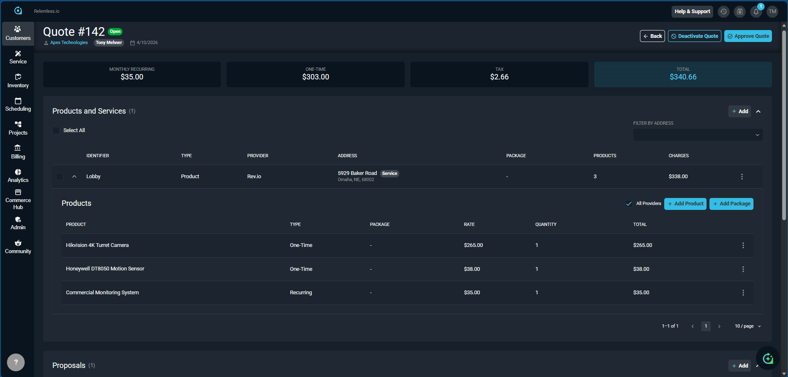
Everything here is pre-built. You are not approving the quote or sending the proposal during the demo. Describe what would happen: "Once the customer signs, non-recurring items automatically create a service ticket and recurring items are added to their billing profile — let me show you what that looks like."
Build quotes with both MRC and NRC items in the same proposal. On acceptance, recurring charges route to the billing profile and one-time items create a service ticket — automatically.
Sell managed services agreements with hardware add-ons in one quote. The platform handles the billing split automatically so finance never manually separates recurring from one-time charges.
Quote hardware installation (one-time) and RMR monitoring (recurring) in a single proposal — the system handles the billing split on acceptance. No double-entry, no confusion.
Service Tab — Quote → Ticket
Navigate to the customer's Service tab and find the ticket that was automatically created when the quote was accepted. This is the handoff from sales to ops — zero manual steps.
Close the loop between the quote and service execution. Show the ticket that was auto-created from the quote.
What to Show
- Navigate to Apex Technologies → Servicing tab
- Find and highlight Ticket #663 — "Quote Signed: Security Upgrade" (highlighted in red border in the screenshot)
- Point out the status: Open, Priority: High, Billing Status: Not Sent
- Note the other tickets visible — shows a real, active account with ongoing work
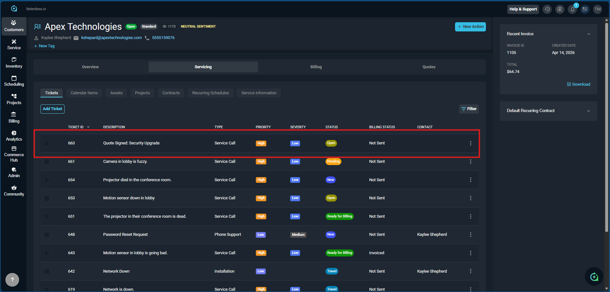
This ticket didn't need to be manually created. The moment the quote was accepted, Rev.io created it automatically — with the description, line items, and customer info already populated. No re-keying, no handoff email, no dropped balls.
Please create a new service ticket for [Customer Name] with the description: "Needs Computer Service". Assign Daniel Gomez as the primary tech. Set both priority and severity low for this ticket.
💡 Revii may ask follow-up questions to clarify details. Answer them to complete creation.
When a customer accepts a quote for a new service installation, the work order is auto-created with all line items populated — no dispatch email, no manual ticket creation, no dropped jobs.
The auto-created ticket means the service team sees new work the moment a prospect becomes a customer. Onboarding doesn't depend on a sales rep remembering to hand things off.
Installation work orders appear the moment a proposal is signed — no lag between sales close and job creation. The field team is notified immediately.
Ticket View & Activity
Click into the ticket and show everything a technician and manager have available — SLA timers, work requested, the full activity feed, and the stage panel.
Dive into ticket details — SLA tracking, work description, activity log, and the stage panel showing time tracking, customer info, and billing status.
What to Show
- SLA Response Timer — live countdown (currently breached at -02:45:32 in red), SLA Resolution Timer — 31:36:32 remaining in green
- AI Ticket Summary banner — "Ticket #663 Open — Server outage response; two pending tasks scheduled, but no work sta…" — instant AI context
- Work Requested — detailed security upgrade scope, AI-generated from the quote description
- Activity tab — Public Notes, Internal Notes, Email — collaboration hub
- Stage panel — Time Tracking (start/stop timer), Calendar Quickview, Transaction Details (Send to Billing button), Recurring Contract, Job Costing
- Capture Signature button — in-field signature capture on the ticket
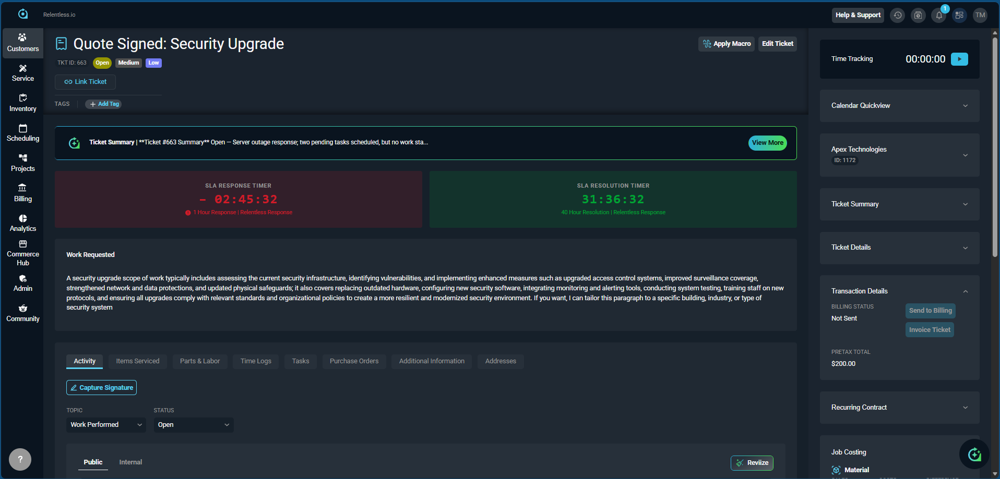
Could you please add an Internal activity note to this ticket. This client needs additional maintenance on the computer
💡 Internal notes are visible to techs only. Use 'public' instead of 'internal' for customer-visible notes.
Could you please add an Internal activity note to the ticket with ID [Ticket ID]. This client needs additional maintenance on the computer
Timestamped activity logs serve as an audit trail for SLA compliance — show customers exactly when tickets were opened, responded to, and resolved, contractually.
The distinction between public notes (customer-visible) and internal notes (team-only) is critical. Techs communicate openly about complex issues internally while keeping customer-facing updates professional.
Security incidents require clear documentation. The ticket activity feed captures every action, timestamp, and note — creating a defensible record of the response.
Rev.iize & AI Note Formatting
Show how Rev.io's AI transforms rough technician notes into polished, professional documentation — instantly, on the ticket.
Demonstrate Rev.iize — the AI tool that converts informal tech notes into customer-ready documentation with one click.
What to Show
- In the Activity tab, a tech typed: "Assessed current security setup" — rough, minimal
- Click Rev.iize — the modal opens showing Original Text vs. Reviized Text side-by-side
- Reviized output: "Reviewed the existing security measures to identify strengths and areas for improvement within our current protection framework."
- Show the Improvements Made list: spelling/grammar, abbreviations expanded, structured sentences, professional tone, maintained accuracy
- One click: Accept Changes — done

Every technician writes notes differently. Rev.iize standardizes the output automatically — consistent documentation, faster billing, better customer communication. No training required.
Let's also add a time log to this ticket. The maintenance of the computer was performed, the tech who did it was Daniel Gomez, it started Feb 27, 2026, at 10am and ended that same day at 11am. As mentioned, this was a maintenance job.
💡 Adjust dates and tech names to match your demo. Revii captures all the billing-relevant fields from plain language.
Open a ticket with "Network Down" as the issue, priority High, status Needs to be Scheduled.
💡 Demonstrate this by voice from any customer page for maximum impact.
Field techs write terse notes like "replaced port, tested OK." Rev.iize turns those into professional documentation that holds up for SLA reporting and customer-facing communications.
With Level 1 helpdesk staff writing tickets, Rev.iize elevates note quality across the board — consistent, professional documentation regardless of who's on shift.
Professional documentation matters for liability. Rev.iize ensures every service note meets a consistent standard — valuable when reviewing work after a security incident.
Parts, Labor & Inventory
Show how the quote's products are already on the ticket — and how inventory management connects directly to the work order.
Show Parts & Labor tab with quote items carried over, inventory reservation, and purchase order creation from the ticket.
What to Show
- Parts & Labor tab — Hikvision 4K Camera ($265) and Honeywell Motion Sensor ($38) already populated from the quote
- Inventory reservation dropdown — "Main Warehouse (Qty Available: 4)" and "Truck 03 (Qty Available: 1)" — see exactly where stock is
- Job Costing panel (right side) — Material Sales $303, Costs $159, Difference $144 margin — real-time profitability on the ticket
- Explain: reserve from warehouse or truck stock, or create a PO if not in inventory
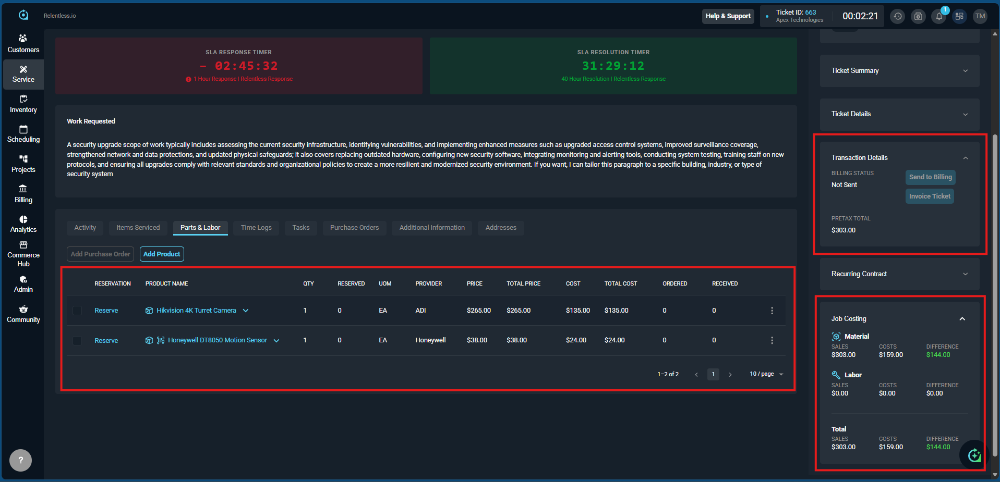
Check inventory levels for 365 Asus Router (Product ID 5609)
What are the quantities of product with ID 5609 for each location?
💡 Shows stock across all warehouses and trucks — great for confirming which truck can handle the job.
The ticket 4995 required the installation of a 365 Asus Router. The product ID is 5909. The client paid 150, and its cost was around 70 dollars.
💡 Adjust ticket number, product details, and pricing to match your demo.
Installation teams managing CPE inventory across multiple warehouses can see availability at each location and reserve stock directly from the work order — no separate inventory system needed.
MSPs handling hardware procurement can track parts against tickets, see margin in real time, and know immediately whether to pull from stock or create a purchase order.
Serialized equipment (cameras, access control panels, alarm systems) can be reserved from specific trucks or warehouses — and exact job margin is visible before the tech ever leaves the office.
Dispatch Board
Show how fast and visual scheduling is — drag a ticket, assign a tech, done.
Schedule work efficiently and show calendar sync with Outlook/Google.
What to Show
- Layout and filtering by tech groups
- Drag and drop the ticket to a tech's time slot
- Fill out the task details and Save
- Confirm sync with Rev.io Calendar and Outlook/Google
- Tech can link back to the full ticket from their scheduled task — the context travels with them
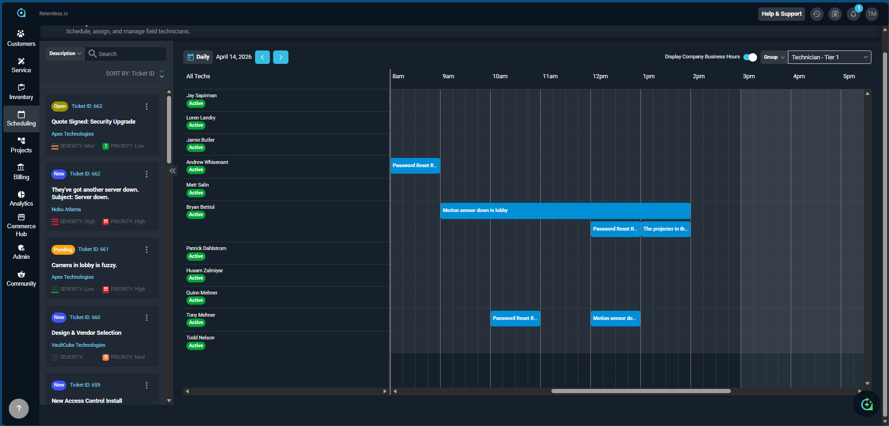
Ticket #663 is sitting in the queue on the left — open, Apex Technologies, Severity Med, Priority Low. The daily calendar shows all techs active. Drag the ticket to a tech's slot, fill in the task, and it syncs immediately to their calendar and to Outlook/Google.
Could you add a follow-up task for this customer? We need to create a purchase order for the router the customer needs. Assign this task to Daniel Gomez and set the start date on Mar 15th and the due date to Mar 20, 2026.
💡 Tasks created via Revii appear on the assigned tech's calendar and task list automatically.
Telecom field service teams can see every tech's availability in a single timeline view, drag tickets to open slots, and sync instantly to Outlook/Google — replacing separate scheduling tools entirely.
Filter the board by tech group (Tier 1, Tier 2, Network) and see exactly who has capacity for urgent tickets — without calling around or checking a shared calendar.
Plan the day visually across multiple installation crews, see who's booked and who has openings, and assign emergency service calls in seconds.
Tech Workflow & Time Logging
Show the technician's experience — and how time tracking flows directly into billing automatically.
Demonstrate timer-based billing automation and Rev.ii voice ticket creation.
What to Show
- Tech clicks Start Timer — timer visible on top ribbon across the whole app
- Tech stops timer and logs work — time entry auto-populates
- Time log auto-bills — no manual billing entry needed
- Tech marks ticket Ready for Billing and moves to next
If a tech forgot to start the timer, they ask Rev.ii to add the time — specify reason code, start and end time in plain language. No lost billable hours.
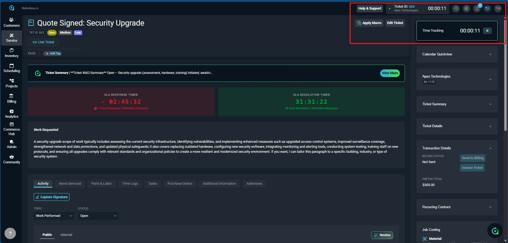
While working this ticket, another customer calls. Navigate to their profile, open Ask Rev.ii, and say: "Open a ticket with 'Network Down' as the issue, priority High, status Needs to be Scheduled." Ticket appears instantly. That's the full Rev.ii capability in 10 seconds.
The timer (00:00:11) is running in the top ribbon — always visible no matter where the tech navigates. The Stage panel on the right shows Time Tracking, Transaction Details ($303 pretax, Send to Billing button), and Job Costing. When the tech stops the timer and marks Ready for Billing, the billing team is notified automatically.
The always-visible timer ensures every minute of billable field work is captured automatically — no timesheet disputes, no unbilled labor, no chasing techs at end of day.
MSPs lose revenue to unbilled labor when techs don't log time accurately. The timer in the top ribbon and Rev.ii voice logging eliminate that gap entirely.
Installation and service time is captured automatically and feeds directly into invoicing — no separate timesheet process, no billing lag.
Billing Notification & Review
Show the billing team's side — automated notifications, a clear queue, and one-click invoice creation. Narrate this step; do not execute it live.
Demonstrate the billing workflow from ticket completion to invoice creation.
What to Show
- Billing team gets notification — email + in-app bell
- Filter Ticket List for Ready for Billing
- Review ticket and all charges
- Point to Send to Billing button — describe what it does, do not click
- Show Billing Tab with Unposted charges — explain invoice creation from here
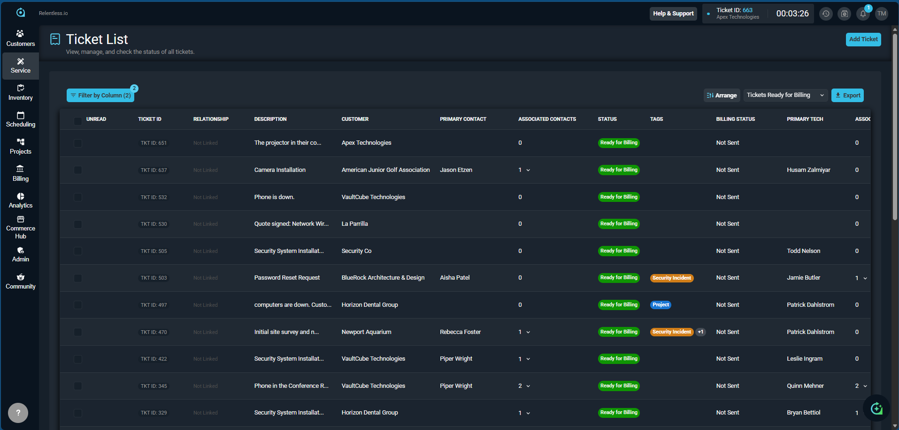
Do not click "Send to Billing" or create invoices during the demo. Walk the UI, describe the workflow. Executing this on the demo environment will cause issues.
The billing team filters to Tickets Ready for Billing — every ticket the field team marked complete is right here, queued up. They review, click Send to Billing, and invoices are generated. The timer running in the top ribbon (00:03:26) is still tracking on Ticket #663 — it'll show up in this queue once the tech marks it done.
Please close ticket with ID 274 and mark it ready for billing.
Close this ticket and mark it ready for billing.
💡 Use this when you're already viewing the ticket. Revii handles the status change instantly.
What is the total value of unposted charges waiting to be invoiced?
💡 Great manager-level prompt — surfaces unbilled revenue at a glance.
Billing teams managing hundreds of accounts can batch-create invoices by bill profile and cycle date — reducing a multi-hour manual process to minutes.
Run automated billing cycles for monthly managed services while keeping project and T&M billing in the same queue — one workflow, all revenue types.
Mixed billing (RMR monitoring + one-time installation + T&M service) all lands in one billing queue, processed in a single batch — no chasing charges across systems.
Customer Portal
Finish strong — show your prospect what their customers will see. Self-service is a competitive differentiator.
Show customer self-service: invoices, payments, ticket submission, and public note visibility.
What Customers Can Do
- Edit payment info — update cards/bank on their own, no calls to your billing team
- View and pay invoices — faster collections, less inbound calls
- Submit new tickets — directly into your service queue
- See public notes on active tickets — full transparency
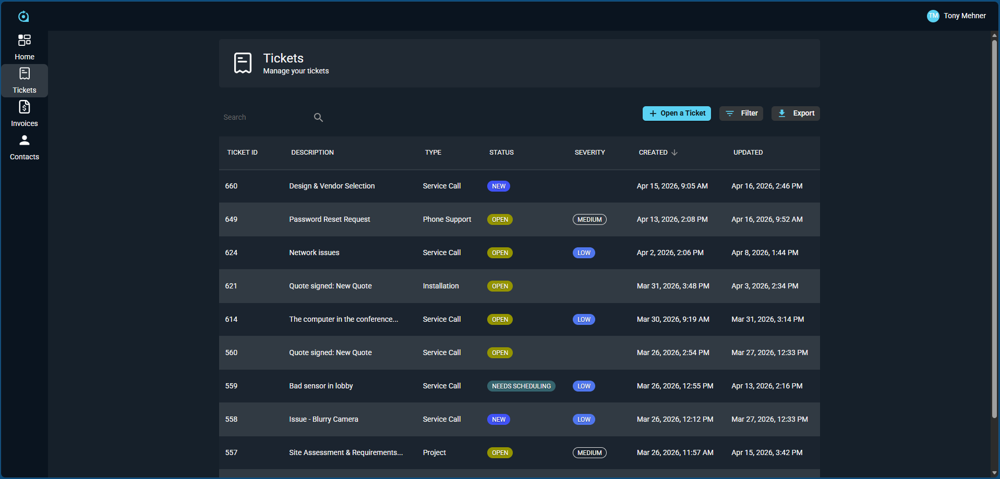
The portal reduces inbound ops calls, speeds up collections, and gives end customers the transparency they expect. Notice the customer can see all their open tickets, statuses, and severity without calling your team. It's a value-add you can sell to your own customers.
Reduce inbound billing calls significantly by giving customers self-service access to invoices and payment methods. Customers expect digital-first service — the portal delivers it.
"Your team can submit tickets directly, view all open issues, and pay invoices without calling us." That's a differentiator in competitive MSP deals — position it as a value-add.
Give monitoring contract customers visibility into their service history and ticket status through the portal — building trust and reducing check-in calls.
Wrap-Up Close
Land the plane. Tie it back to their pain and move to next steps before you hang up.
What You Just Showed
Dashboard → Customer → Opportunity → Quote → Ticket → Dispatch → Billing. No disconnected tools.
Rev.ii summarizes history, formats notes, creates tickets by voice, and corrects time entries.
Accepted quotes automatically create tickets with line items populated. Zero re-keying.
The Portal gives end customers visibility, self-service payments, and direct ticket submission.
Next Steps
- Tie each module back to the specific DBMs uncovered in discovery
- Confirm the Decision Maker was present for the full demo
- Ask: "Based on what you saw today — does this solve the problems you walked us through?"
- Book next step live before you hang up — pricing discussion, technical deep-dive, or contract review
"I'll follow up" is not a next step. Reference a DBM when booking: "Let's schedule 30 minutes to walk through pricing specifically around the contract management piece you mentioned."
Analytics & Reporting
Rev.io includes a full analytics engine powered by Apache Superset — with pre-built dashboards, custom charts, SQL access, and an AI-powered natural language query interface.
Show prospects that Rev.io goes beyond operational data — it gives leadership the business intelligence they need to make decisions, answer RFP reporting questions, and replace standalone BI tools.
Pre-Built Dashboards
- Service Dashboard — SLA performance, ticket queue health, resolution rates, tech productivity
- Revenue Analysis — MRC vs. NRC, YTD trends, billing cycle performance
- Profit by Technician — labor margin per tech, billable vs. non-billable hours
- Tax Details — detailed tax reporting for compliance
- Inventory Dashboards (5) — levels, valuation, aging, movement/transactions, reserved vs. available stock
- Pick List Dashboard — parts fulfillment tracking
Advanced Capabilities
- Custom Chart Builder — build any visualization from your live data
- SQL Lab — direct SQL queries against the Rev.io data warehouse for power users
- Saved Queries — save and reuse custom reports
- Dataset Management — define and manage custom data sources
- Chat With Your Data — ask natural language questions powered by the Revii AI engine
Telecom operators need granular revenue reporting across MRC, NRC, and usage-based billing. The Revenue Analysis dashboard and SQL Lab give finance teams the data they need for forecasting, audits, and regulatory reporting — without exporting to Excel.
MSPs use Profit by Technician to identify which clients and engineers are driving margin — and which aren't. "Chat With Your Data" lets non-technical managers ask questions in plain English and get instant answers without involving IT.
Security integrators managing RMR portfolios can track recurring revenue trends, inventory valuation of serialized equipment, and job profitability by project — all from pre-built dashboards ready on day one.
List all open tickets for the day.
💡 Morning standups — instant workload snapshot.
Identify Service Call tickets that have been open for more than two days.
💡 Catch SLA risks proactively. Adjust the threshold to your SLA terms.
Provide the total number of tickets by severity
For all the tickets that have High priority, how many tickets are there on each status?
What's the longest time a ticket has been open? Which ticket is it?
What is the total value of unposted charges waiting to be invoiced?
Show me customers with outstanding balances over 60 days.
How many hours did each technician log this week?
Which technician has the most open tickets assigned?
Which customers have the most tickets this month?
List customers with recurring contracts expiring in the next 30 days.
What is the average time to close a ticket by ticket type?
How many tickets were escalated this month compared to last month?
When an RFP asks "Does the platform include reporting and analytics?" — the answer isn't just yes. It's: 10+ pre-built dashboards, a full SQL interface, custom chart builder, and AI-powered natural language queries. That's a complete BI layer, not a basic report viewer.
Workflow Automation
Rev.io includes a powerful workflow engine that automates notifications, escalations, and actions across the platform — triggered by events, conditions, and SLA thresholds.
Show prospects how Rev.io eliminates manual follow-up, ensures SLA compliance, and keeps every stakeholder informed automatically — without custom development.
How Workflows Work
- Step 1 — Trigger: Choose what starts the workflow — SLA breach, ticket status change, new ticket created, calendar event (7+ trigger types)
- Step 2 — Conditions: Filter by 14+ fields with match-all / match-any / match-none logic
- Step 3 — Reactions: Send Email, SMS, In-app notification, or Microsoft Teams message — multiple reactions per workflow
What You Can Automate
- SLA breach alerts — notify managers and escalate before SLAs are missed
- Ticket assignment notifications — alert techs instantly when a ticket is assigned
- Status change updates — keep customers informed automatically
- Billing reminders — trigger notifications when tickets reach "Ready for Billing"
- Escalation chains — auto-escalate high-priority tickets if not acknowledged
- SMS opt-in compliance — built-in compliance controls for customer SMS
Telecom providers with contractual SLA obligations can automate escalation workflows that fire before breaches occur — ensuring the right manager is alerted with enough time to act. No manual monitoring required.
MSPs can automate the entire "ticket assigned → tech notified → customer updated → billing alerted" chain without writing a single line of code. Fewer dropped balls, less management overhead, happier clients.
When a security incident ticket is opened, a workflow instantly notifies the on-call tech via SMS, alerts the manager via Teams, and sends the customer a confirmation email — all in seconds, automatically.
The demo environment includes 19 active workflows — this is a production-ready automation engine, not a prototype feature.
Integrations
Rev.io connects natively with the tools your prospects are already using — through a pre-built integrations library and an open REST API.
Address the "will it work with what we already have?" concern head-on. Call out the specific connectors relevant to each buyer type.
Pre-Built Integrations
| Category | Integration | What It Does |
|---|---|---|
| CRM | HubSpot | Sync customers, contacts, and opportunities between Rev.io and HubSpot |
| RMM | NinjaOne | Sync devices, alerts, and tickets between RMM and PSA |
| RMM | N-able | Sync assets, alerts, and service tickets |
| RMM | Acronis | Backup and cyber protection status synced to Rev.io |
| Documentation | Hudu | Link documentation directly to customers and assets in Rev.io |
| Calendar | Google Calendar | Two-way sync for scheduled tickets and dispatch items |
| Calendar | Microsoft Outlook | Two-way sync for scheduled tickets and dispatch items |
| Communication | Microsoft Teams | Workflow notifications and alerts directly in Teams channels |
| Communication | Slack | Workflow notifications delivered to Slack channels |
| Central Station | COPS Monitoring | Alarm monitoring integration for security providers |
Open API
- REST API with named API key management (expiry dates, audit trail)
- Connect any custom system, internal tool, or third-party platform
- Full API key lifecycle management in the Admin panel
Telecom providers already using HubSpot don't have to abandon it — the native integration keeps both systems in sync. Calendar sync with Outlook means dispatchers and field teams work from one source of truth.
For MSPs, the RMM integrations (NinjaOne, N-able, Acronis) are the headline. Alerts from your RMM automatically create tickets in Rev.io — closing the gap between monitoring and service delivery without manual intervention.
The COPS Monitoring integration is purpose-built for security integrators — alarm events from the central station flow directly into Rev.io service tickets. Documentation in Hudu stays linked to the customer record.
When asked "What integrations do you support?" — go specific. Name the exact tools they mentioned in discovery. "You mentioned you're running NinjaOne — we have a native, pre-built integration for that."
Project Management
Rev.io includes a full project management module for managing larger deployments — with Gantt views, milestones, phases, job costing, and a complete activity feed.
Show prospects that Rev.io handles complex, multi-phase projects — not just break/fix tickets. Key for enterprise buyers, large deployments, and onboarding workflows.
Project Management is currently in beta. Lead with what's available today and position ongoing development as a sign of active investment in the platform.
Key Capabilities
- Project list with status cards — In Progress, On Hold, Not Started; statuses: Active, At Risk, Complete
- Phases — break projects into phases with start/end dates, assignees, and planned hours
- Milestones — track key deliverables with due dates and On Track / Past Due status badges
- Gantt view — color-coded timeline with phase bars and milestone markers
- Work management — create and link tickets and tasks to phases within the project
- Job costing — real-time Material and Labor rows showing Sales, Costs, and Difference (margin)
- Project Team — Owner, Members, Primary Contact, Associated Contacts managed per project
- Activity Feed — full change log with timestamps
Demo Projects Available
- New Building Deployment — Reinhardt University
- Physical Security Upgrade — VaultCube Technologies
- Managed Services Implementation — La Parrilla
- SD WAN Install — Newport Aquarium (At Risk — great for showing visibility)
- New Facility Installation — ABC Healthcare Clinic (Complete)
Large enterprise telecom deployments — multi-site installations, network buildouts — need more than a ticket. Project phases, milestone tracking, and job costing give project managers the structure to run complex work without switching tools.
MSP onboarding projects can be managed end-to-end in Rev.io — from kickoff milestone to go-live. Job costing shows the real margin on implementation work in real time, so you know immediately if a project is drifting out of budget.
Physical security installs are projects, not tickets. Gantt views and phase management give project managers visibility across concurrent jobs — and job costing tracks material and labor margin on every installation as it progresses.